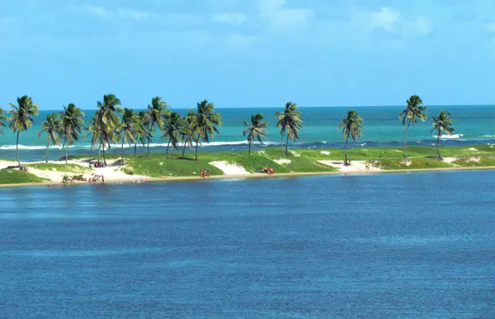
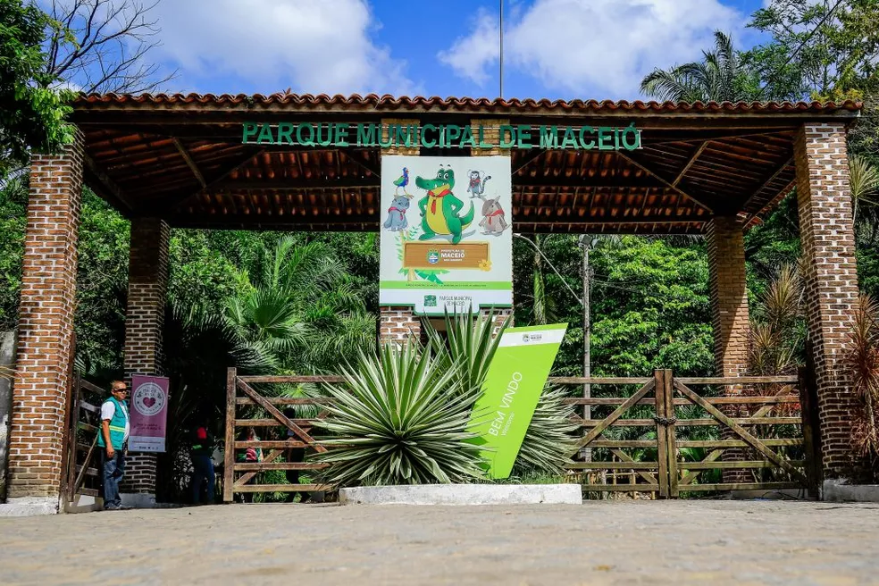
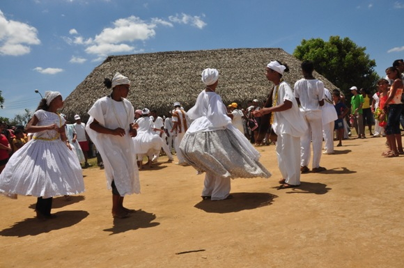
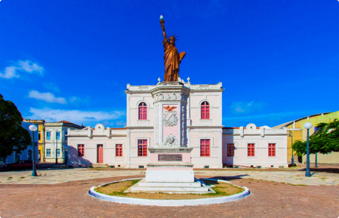
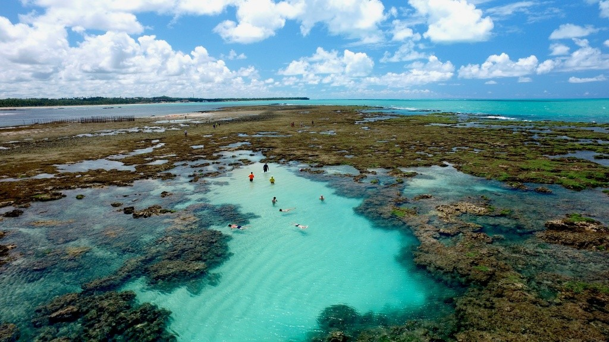
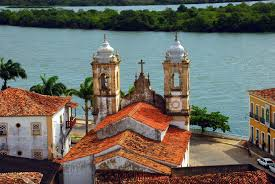

Conheça alguns pontos turísticos:

Lagoa Mundaú
- São cerca de 26 km quadrados que fazem com que a Lagoa de Mundaú esteja em um dos maiores ecossistemas de Alagoas. Além da importância ambiental, o local também é marcante no contexto histórico, cultural, social e econômico.

Parque Municipal
- O Parque Municipal de Maceió está localizado no bairro de Petrópolis, criado pela lei municipal 4952 do ano 2000. O parque tem cerca de 82,4 hectares de área e é considerado uma Unidade de Conservação e área de proteção ambiental (APA). Possui cinco trilhas ecológicas.

Serra da Barriga
- A Serra da Barriga faz parte do Planalto Meridional da Borborema. A área ocupada pela Serra da Barriga e suas ramificações para nordeste, tomando como ponto de partida o vale de um afluente do riacho Açucena até o vale do Mundaú.

Museu da Imagem e do Som de Alagoas
- O Museu da Imagem e do Som de Alagoas, instituição da Secretaria de Cultura do Governo do Estado de Alagoas é um dos mais frequentados centros culturais da cidade de Maceió.

Piscinas Naturais do Pratagy
- Em Maceió, na exuberante Praia de Pratagy, uma das mais belas e tranquilas da região, as exclusivas e inexploradas piscinas naturais do Pratagy Beach All Inclusive Resort – Wyndham se destacam pela sua excepcional beleza.

Igreja Nossa Senhora da Corrente
- A Igreja de Nossa Senhora da Corrente é uma das edificações católicas da cidade de Penedo. Possui detalhes arquitetônicos do barroco, rococó e neoclássico, decorada com azulejos portugueses do Império e piso de cerâmica inglês.